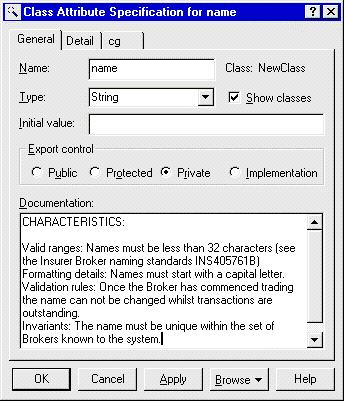

Standards: Attributes
in Rose
 |
An attribute is a named property of a class that describes a range of values that
instances of the property may hold. |
| Related Information: |
|
Topics
Background 
This section illustrates how to enter attribute documentation into Rational Rose.
Documenting Attributes in Rose
The attribute will be described in the Rose Attribute's documentation field accessed
via the attribute's specification. The characteristics will also be added to the attribute
documentation of the attribute in Rose (as shown below).
Note: initial values should be entered into the Initial Value field and
not the documentation field.

|